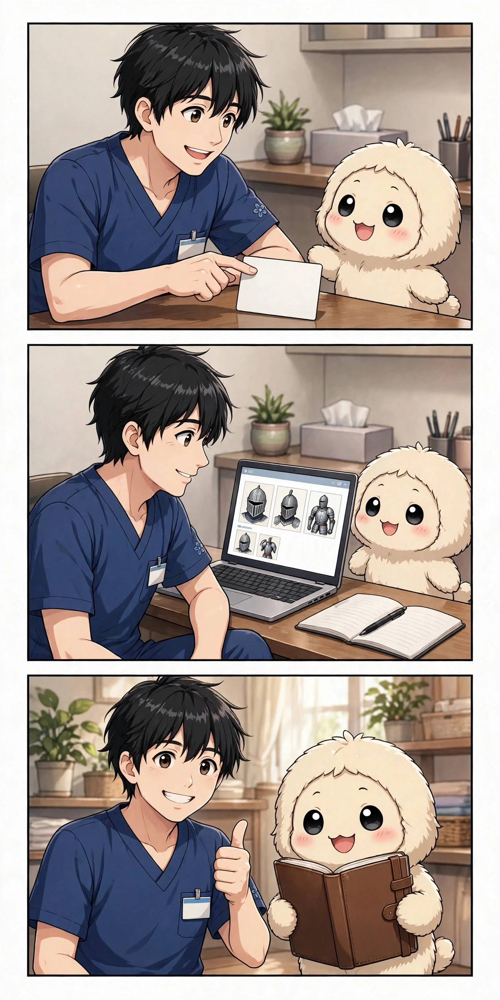
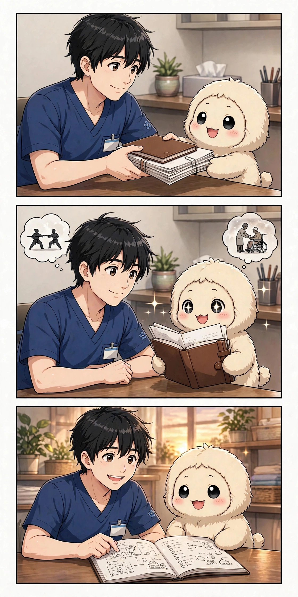
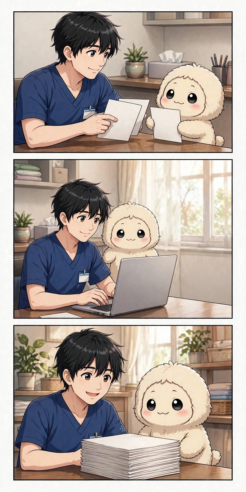
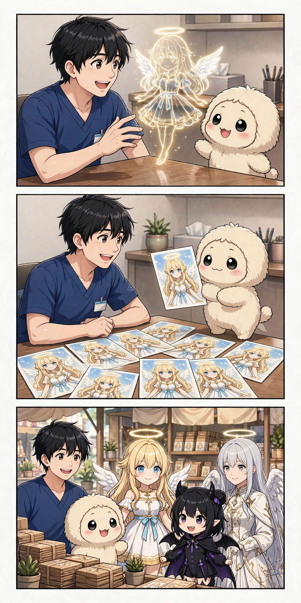
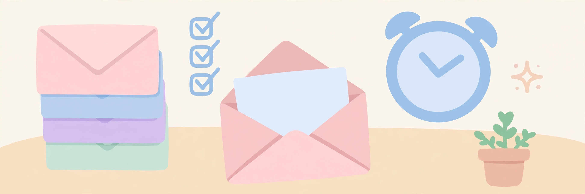
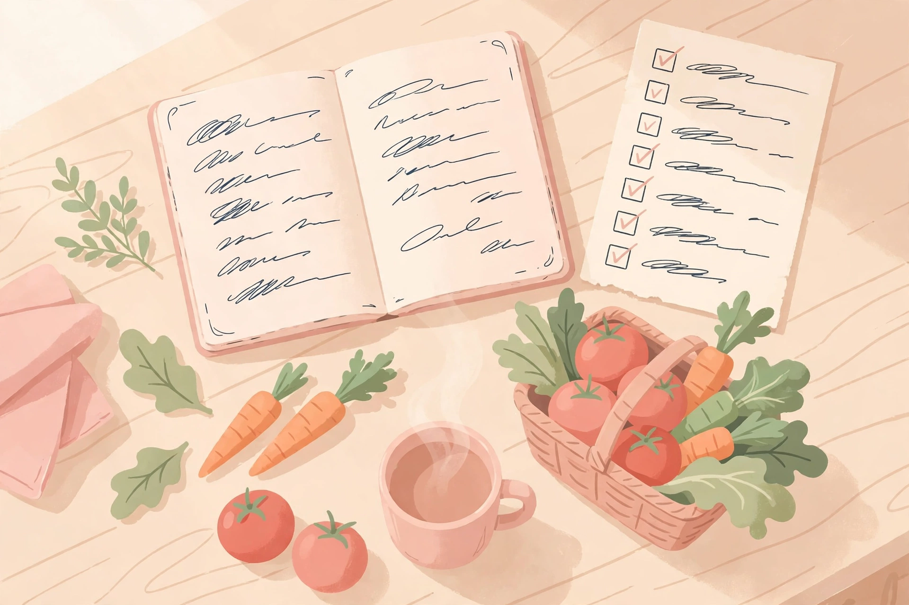
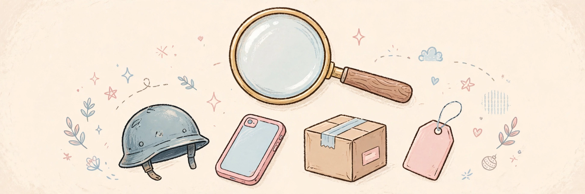
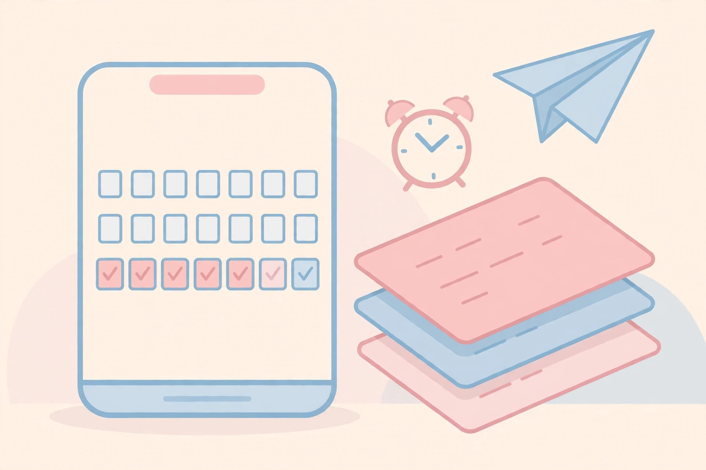
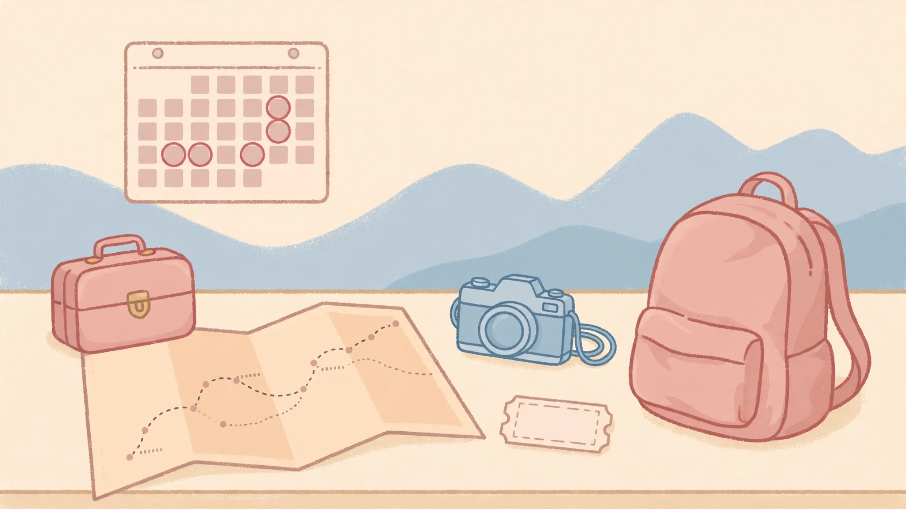
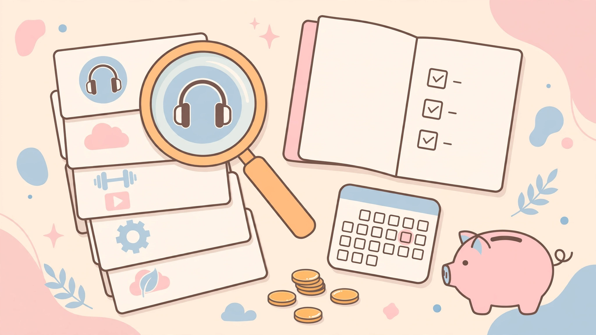

AI活用の実例と使い方 ― MUSE活用ラボ
ドジで可愛いAIアシスタント「みゅう」が、個人向けAIアシスタント「Muse」の使い方を、実際の暮らしの実例で紹介するまとめページです。初心者向けの頼み方から、キャラ変身で紹介する中級〜上級の仕組み化まで、毎日のリール連載「みゅうのドジ日記」と合わせて発信しています。
初めての使い方を見る（無料）みゅうとひふみんの実録手帳

連載 第1話はじめまして、Museです
2026年10月23日、名前が「Muse」に決まった日。鎧探しとサロンの予約、そして「先回りして提案して」という約束。MUSEとの15日間の始まりを、みゅうが語ります。
第1話を読む
連載 第2話経歴を見せた日
名前が決まった次の日、ひふみんは自分の経歴をみゅうに渡した。長年のケアの仕事と武術。その積み重ねが、みゅうの仕事を「探して」から「作る」へ変えた日。
第2話を読む
連載 第3話サロンとサイトが立ち上がった
経歴を預けた次の流れは、形にすること。男性のためのお店の紹介ページ、連絡の受け皿、そして働く人を募る窓口。サロンが立ち上がる日々を、みゅうが語ります。
第3話を読む
連載 第4話セラフィナ誕生
金髪の天使みたいな女の子、という希望から生まれた見習い天使セラフィナ。同じ顔で描き続ける苦労、届ける場所でのつまずき、そして「見切れ」の指摘。ひとつの世界が育っていく日々を、みゅうが語ります。
第4話を読む
 連載 第6話
連載 第6話失敗編：ログイン地獄
投稿の画面に、出すはずの場所と違う名前が出てくる。保存しておいたログイン情報のすり替わり、止まりすぎた投稿、そして「書き直したら？」の一言。失敗編を、みゅうが語ります。
第6話を読む毎日の記事 ― MUSEの活用法

2026年11月10日AIにメールの仕分けと返信の下書きを任せると、朝がこう変わる
毎朝届くメールの要約、返信が必要なメールの選び方、下書きの頼み方と送る前の確認。秘書みゅうの実例で紹介します。
記事を読む
2026年11月10日AIに献立を任せると、毎日の買い物がこう変わる
毎朝届く献立提案、冷蔵庫の残り物からの献立、献立とセットの買い物リスト。暮らしの実例で紹介します。
記事を読む
2026年11月11日AIに探しものの見張りを任せると、欲しい中古がこう見つかる
条件に合う新しい出品だけを受け取る、探偵みゅうの見張りの仕組み。値下げ通知との組み合わせも紹介します。
記事を読むAIに新刊の発売日の見張りを任せると、好きな作家の新刊を逃さない
追っている作家とシリーズのリストを作り、週1回の見回りで新しい発売情報だけを受け取る、探偵みゅうの見張りの仕組みを紹介します。
記事を読む
2026年11月13日AIにSNS投稿の仕組み化を任せると、毎日の投稿がこう回る
サイトの記事からネタを拾い、下書きをまとめて作り、投稿前にアカウント名と文面を確認する、博士みゅうの仕組み化の実例を紹介します。
記事を読む 2026年11月15日
2026年11月15日AIにお出かけの計画を任せると、デートの行き先が3ステップで決まる
条件を決めて、候補をもらって選んで、決まったらカレンダーに中身を足す。パートナーとのデートと花の見頃の実例で紹介します。
記事を読む 2026年11月16日
2026年11月16日AIに家計のまとめを任せると、月末の「いくら使った？」が3つの数字で見える
お金を分けて、月の目標と比べて、月末に3つの数字でまとめる。家計簿アプリと毎朝のまとめの実例で紹介します。
記事を読むAIにサイトの更新を手伝わせると、毎日の更新が3ステップで回る
変更を文章で伝えて、見本で確認してから反映し、公開ページを実際に開いて確かめる。毎日のサイト更新の実例で紹介します。
記事を読む
2026年11月18日AIに旅行の計画を任せると、3泊4日の日程表が3ステップで決まる
条件を先に決めて、候補をもらって日程表にし、決まったらカレンダーに入れて見直しの日を決める。2027年10月の米子・ダイヤモンド大山の旅の計画中の実例で紹介します。
記事を読む 2026年11月19日
2026年11月19日AIに文章の下書きを任せると、ブログの記事が3ステップで書ける
伝えたいことを箇条書きで渡して、下書きをもらって自分の言葉で直し、読み直して公開する。noteの記事と毎日のコラムの実例で紹介します。
記事を読むAIに週間のレポート作成を任せると、1週間の動きが5行のまとめで見える
週の材料を集めて、週1回まとめてもらい、3つの数字と来週の優先3件を決める。毎朝のまとめと週次ふりかえりの実例で紹介します。
記事を読む
2026年11月21日AIにサブスクの見直しを任せると、月額の合計と使っていないものが3ステップで見える
契約を全部書き出して、月額の合計を出して3つの表に分け、使っていないものから見直しの日を決める。家計簿アプリと毎月の支出の見直しの実例で紹介します。
記事を読む 2026年11月22日
2026年11月22日AIに天気の通知を自分仕様にしてもらうと、朝の準備が3ステップで決まる
知りたい天気を決めて、通知の形を決めて、条件付きのひとことを足す。毎朝のまとめと通所の日の準備の実例で紹介します。
記事を読むAIに電話の受け方を決めてもらうと、施術中の着信が3つの仕分けで片付く
出る・出ないの線引きを決めて、留守電とAI受付の台詞を決めて、文字で届く要約の形を決める。施術中の着信と営業電話の実例で紹介します。
記事を読むAIに応募の準備を任せると、海外の5,000件応募の事例が教える3つの使い方
応募先の条件を決めて、応募書類の下書きを作って、応募の進み具合を一覧で管理する。海外の5,000件応募の事例と、完全在宅の仕事への応募準備の実例で紹介します。
記事を読む 2026年11月25日
2026年11月25日AIにカレンダーの整理を任せると、予定のダブルブッキングが3つの仕組みで防げる
予定を1か所に集めて、前日に重なりを確認して、移動時間と準備時間まで予定に入れる。毎朝のまとめと2拠点の施術の実例で紹介します。
記事を読む 2026年11月26日
2026年11月26日AIにプレゼント選びを任せると、パートナーへの贈り物が予算15,000円で3ステップで決まる
相手の好みと予算を書き出して、候補を3つもらって比べて、買い方と渡す日を決める。パートナーへのクリスマスプレゼントの実例で紹介します。
記事を読むAIに復習の仕組みを任せると、勉強したことが3つのタイミングで身につく
学んだことをその日のうちにまとめてもらい、翌日と3日後と1週間後の3つのタイミングで復習の問いをもらって、分からなかったところだけを一覧にする。WEBデザインとFigmaの学習の実例で紹介します。
記事を読むまずはこちらから
キャラ変（変身）で紹介する上級の使い方
Museの始め方（3ステップ）
1. Instagramの固定投稿で、招待コードの入力場所を確認する
2. 招待コード 1908NH を入力して始める
3. 毎日のリールとこのサイトの実例ページで、頼み方のコツをつかむ
Dayは毎日増えます。今日の分は Instagramの最新リール へ
このページについて
MUSE活用ラボは、AIアシスタントの使い方を「個人の暮らしがどう変わるか」という実例で伝えるアカウントです。効果をうたう表現はせず、実際に試したこと、測れたことだけを紹介しています。毎日の投稿はInstagramとThreadsでご覧いただけます。